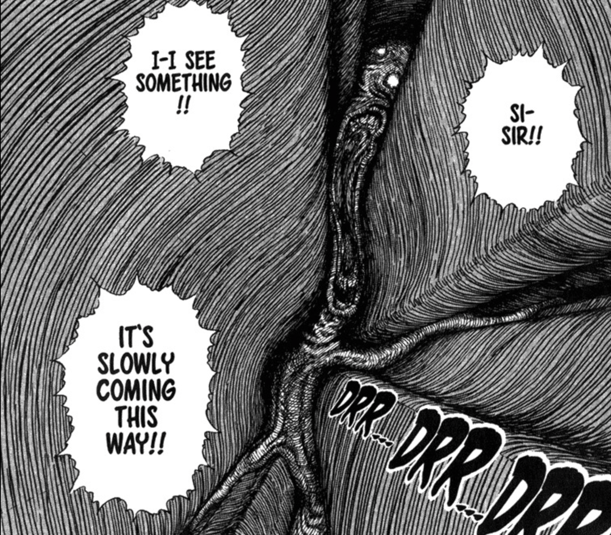

ENDING THREE |
Months after your disappearance, scientists on the other side of the mountain begin to notice human-shaped holes... However, most were crushed and deformed by the earthquake. One of them decides to flash the flashlight inside to take a look. Horrified, they find a disfigured creature crawling closer to them, into the light.
